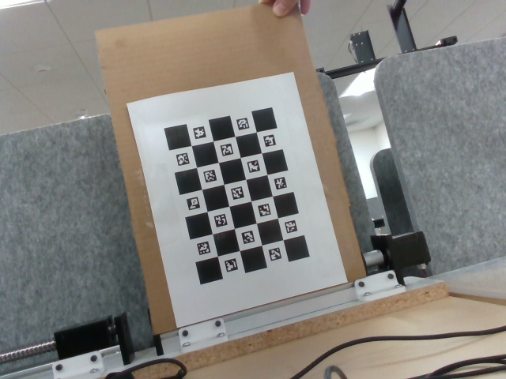
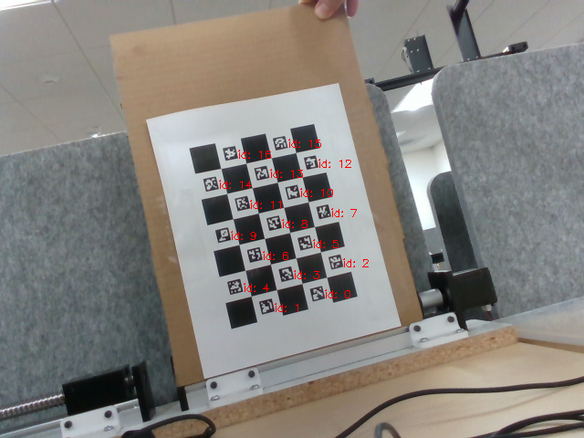
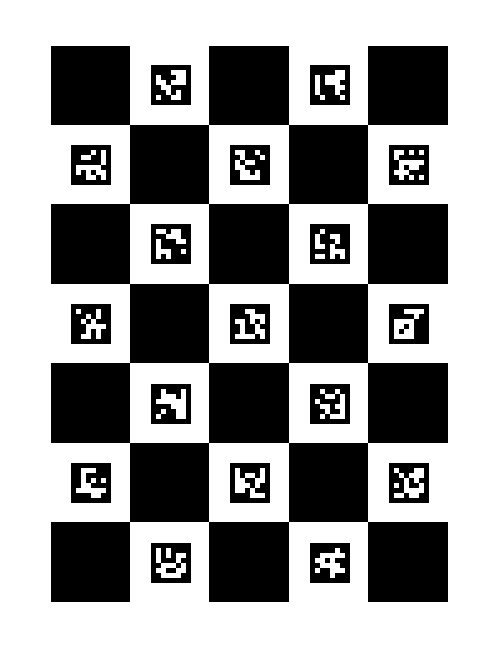

Depth-Camera Data Acquisition and Calibration
An RGB-D acquisition and calibration workflow using an Intel RealSense depth camera, ROS, and OpenCV to capture aligned color and depth data and establish the coordinate transformation needed for three dimensional motion tracking.
Python · ROS · Intel RealSense · OpenCV · RGB-D Imaging · Camera Calibration
Context and attribution
This page documents the depth-camera acquisition and calibration
workflow contained in the available research repository. The
repository includes camera calibration utilities and a ROS
camera_record package for collecting aligned RGB
and depth imagery. The archived files do not include a retained
example RGB/depth image pair produced by the recording script,
so no synthetic image pair is presented here.
Purpose and Acquisition Workflow
The acquisition stage provides the image and depth information required by the downstream vision-based motion-tracking workflow. The system uses a RealSense depth camera to acquire color images and depth maps, while camera calibration establishes the geometric relationship between the camera coordinate system and the experiment's world coordinate system.
The repository workflow is designed to run the image-acquisition portion on an Ubuntu Linux environment with ROS and the Intel RealSense software stack. Depth data are aligned to the color image before recording so that image pixels and their associated depth measurements share the same image coordinate system.
RGB-D Recording
The repository's listener.py script uses ROS image
messages and cv_bridge to convert incoming camera
messages into OpenCV images. Each acquisition cycle creates one
timestamp that is used when saving the color frame and the
corresponding aligned depth frame.
Color Stream
/camera/color/image_raw
Converted to an OpenCV BGR image and stored in the RGB output directory.
Aligned Depth Stream
/camera/aligned_depth_to_color/image_raw
Converted as a 16-bit single-channel depth image and stored in the depth output directory.
Available archive limitation
The provided repository contains the recording code but does not contain the RGB and depth output directories from an acquisition run. The workflow above therefore documents the actual acquisition path implemented by the code without presenting a fabricated example frame pair.
Camera Calibration
Calibration uses a ChArUco-style marker board with known marker geometry. The repository includes both a captured calibration image and a marker-detection result, allowing the calibration pipeline to be inspected directly from the archived project files.

{kind=link}

{kind=link}

Camera-to-World Transformation
The calibration scripts associate detected marker corners in the camera image with known marker locations on the calibration board. Marker pose estimation provides corresponding three-dimensional points in the camera coordinate system. A rigid transformation is then determined between the camera coordinates and the known world coordinates of the board.
Role in the Motion-Tracking Pipeline
The acquisition and calibration stages establish the data and coordinate framework required for three dimensional tracking. In the broader vision-based workflow, colored markers on the target are identified in the RGB image, their image centroids are paired with depth information, and camera intrinsics are used to recover their three dimensional camera-frame positions. The calibrated extrinsic transformation then maps those positions into the world frame.
Technical Components
- Intel RealSense depth-camera acquisition on an Ubuntu Linux environment.
- ROS-based color and aligned depth image streams.
-
OpenCV and
cv_bridgeconversion between ROS image messages and image arrays. - Timestamp-based pairing of RGB and depth image files.
- ChArUco / ArUco fiducial detection for calibration.
- Camera intrinsic parameters and lens-distortion coefficients used during pose processing.
- Camera-to-world rigid transformation represented by rotation and translation.
- Calibration outputs used to support subsequent three dimensional marker tracking.
Engineering Interpretation and Limits
The depth-camera acquisition stage is important because the downstream displacement calculation depends on reliable correspondence between color-image locations and depth measurements. Aligning the depth map with the color frame and establishing a calibrated world coordinate system provides a consistent basis for comparing tracked marker positions over time.
The available archive documents the intended acquisition and calibration workflow but does not include recorded RGB/depth output pairs from an experiment. The figures shown on this page therefore document the retained calibration artifacts rather than presenting reconstructed or synthetic camera measurements. Calibration quality and depth accuracy also depend on the camera configuration, target visibility, imaging conditions, and the quality of the underlying depth measurement.